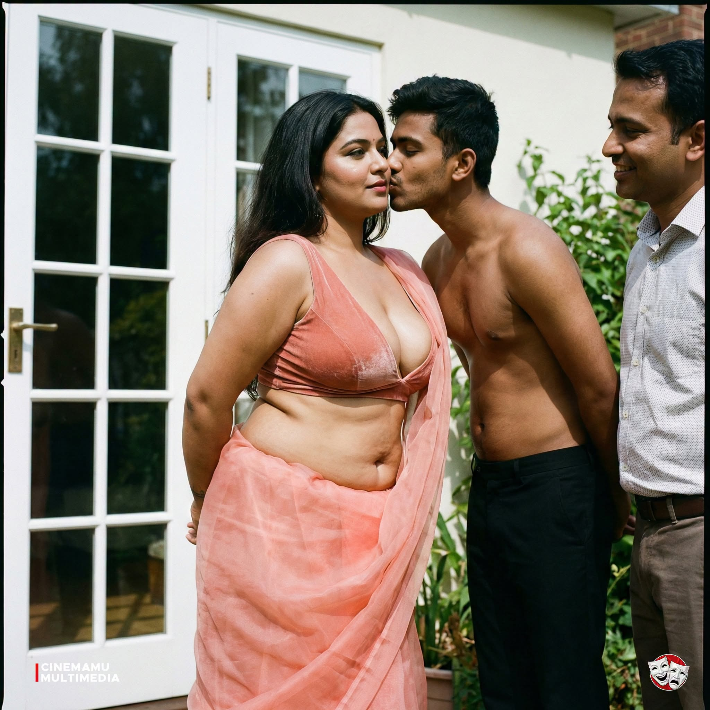
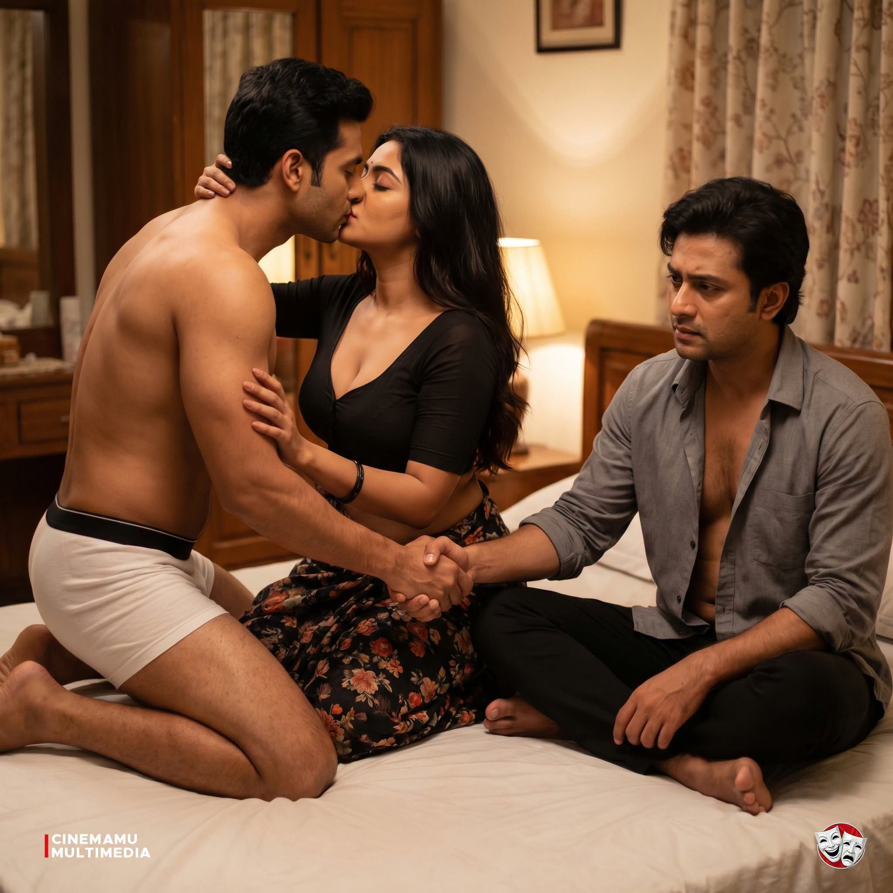

A PHOTO JOURNAL
Moments.
Browse the complete photo collection, read practical guides, or choose a video page. On each video page, scroll through the photos and allow a short wait at the bottom for its link to appear.
THE READING ROOM
Stories & practical guides

RESPECT & STYLEHow to notice someone's style respectfullyAppreciate the styling and photography without making assumptions about the person.Read the guide ↗
COMFORT & FITHow to choose a bra sizeUse measurements as a starting point, then check how the band, cups, and straps feel.Read the guide ↗ BODY & HEALTHHow breast development and enlargement workA plain-language overview of natural changes and what cosmetic procedures involve.Read the guide ↗
BODY & HEALTHHow breast development and enlargement workA plain-language overview of natural changes and what cosmetic procedures involve.Read the guide ↗
SIX SEPARATE PAGES
Choose a full video
Each page has the complete photo stream. Scroll down slowly; the matching video link appears after the collection.
01Full video 01Photo collection · then video link↗
02Full video 02Photo collection · then video link↗
03Full video 03Photo collection · then video link↗
04Full video 04Photo collection · then video link↗
05Full video 05Photo collection · then video link↗
06Full video 06Photo collection · then video link↗
THE COMPLETE COLLECTION
One photograph at a time
Scroll from top to bottom to see all the images in sequence.
KEEP EXPLORING
Six videos, six pages
Choose a video above to open its dedicated page.
Choose a video